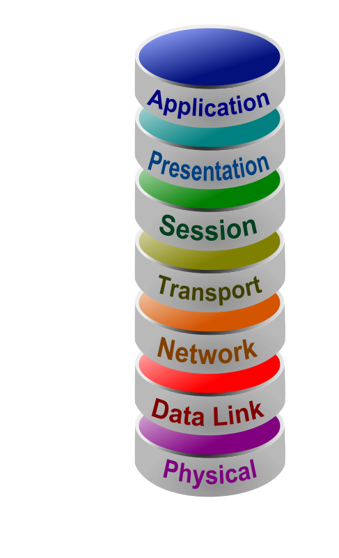

The Session Layer is responsible for opening, maintaining, and closing communication or connections between devices. It ensures that there is enough time for the transfer of all data and closes any connection to avoid waste. The layer adds saving checkpoints when transferring data in case there is an error to prevent the data from starting over from the beginning.
You may find more information on the OSI Model here
